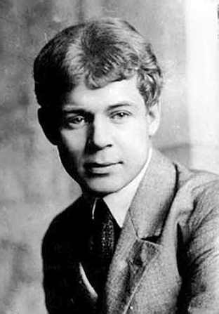

Биография
Родился Сергей Есенин в селе Константиново Кузьминской волости Рязанского уезда Рязанской губернии, в крестьянской семье. Отец — Александр Никитич Есенин (1873—1931), мать — Татьяна Фёдоровна Титова (1875—1955). Сёстры — Екатерина (1905—1977), Александра (1911—1981). Дом, где родился С. А. Есенин. Константиново В 1904 году Есенин пошёл в Константиновское земское училище, по окончании которого в 1909 году начал учёбу в церковно-приходской, второклассной учительской школе[4] (ныне музей С. А. Есенина) в Спас-Клепиках. Здание школы, в которой учился С. Есенин в г. Спас-Клепики По окончании школы, в августе 1912 года, Есенин переехал в Москву и начал работать в мясной лавке купца Крылова, где служил старшим приказчиком его отец. В это время Есенин жил в Общежитии одиноких приказчиков во владении купца Н. В. Крылова (сейчас там располагается Московский государственный музей С. А. Есенина). Позже Есенин находит работу в типографии И. Д. Сытина. В 1913 году поступил вольнослушателем на историко-философское отделение в Московский городской народный университет имени А. Л. Шанявского. Работал в типографии, был дружен с поэтами Суриковского литературно-музыкального кружка[3].
Профессиональная деятельность
В 1914 году в детском журнале «Мирок» впервые были опубликованы стихотворения Есенина. Первое его стихотворение «Береза» было опубликовано под псевдонимом «Аристон»[5]. В 1915 году Есенин переехал из Москвы в Петроград, читал свои стихотворения А. А. Блоку, С. М. Городецкому и другим поэтам. В апреле на одном из литературных вечеров Есенин познакомился с искровцем, литератором-рецензентом, членом ЦК РСДРП Щеколдиным Ф. И. (Повар). В январе 1916 года Есенина призвали на войну. Благодаря хлопотам друзей, он получил назначение («с высочайшего соизволения») в Царскосельский военно-санитарный поезд № 143 Её Императорского Величества Государыни Императрицы Александры Фёдоровны по рекомендациям Григория Распутина и Николая Клюева[6][7]. В это время он сблизился с группой «новокрестьянских поэтов» и издал первые сборники («Радуница» — 1916), которые сделали его очень известным. Вместе с Николаем Клюевым часто выступал, в том числе перед императрицей Александрой Фёдоровной и её дочерьми в Царском Селе. В 1915—1917 годах Есенин поддерживал дружеские отношения с поэтом Леонидом Каннегисером[8], впоследствии убившим председателя Петроградской ЧК Урицкого. К 1918 — началу 1920-х годов относится знакомство Есенина с Анатолием Мариенгофом и его активное участие в московской группе имажинистов. В период увлечения Есенина имажинизмом вышло несколько сборников стихов поэта — «Трерядница», «Исповедь хулигана» (оба — 1921), «Стихи скандалиста» (1923), «Москва кабацкая» (1924), поэма «Пугачёв». В 1921 году поэт вместе со своим другом Яковом Блюмкиным ездил в Среднюю Азию, посетил Урал и Оренбуржье. С 13 мая[9] по 3 июня гостил в Ташкенте у своего друга и поэта Александра Ширяевца. Там Есенин несколько раз выступал перед публикой, читал стихотворения на поэтических вечерах и в домах своих ташкентских друзей. По словам очевидцев, Есенин любил бывать в старом городе, чайханах старого города и Урды, слушать узбекскую поэзию, музыку и песни, посещать живописные окрестности Ташкента со своими друзьями. Он совершил также короткую поездку в Самарканд[3]. В 1924 году Есенин решил порвать с имажинизмом из-за разногласий с А. Б. Мариенгофом. Есенин и Иван Грузинов опубликовали открытое письмо о роспуске группы. В газетах стали появляться резко критические статьи о Есенине, обвиняющие его в пьянстве, дебошах, драках и прочих антисоциальных поступках. Поэт своим поведением (особенно в последние годы жизни) иногда сам давал основание для подобного рода критики. На Есенина было заведено несколько уголовных дел — в основном по обвинению в хулиганстве. Известно также Дело четырёх поэтов, связанное с обвинением Есенина и его друзей в антисемитских высказываниях. Советская власть беспокоилась о состоянии здоровья Есенина. Так, в письме Раковского к Дзержинскому от 25 октября 1925 года Раковский просит «спасти жизнь известного поэта Есенина — несомненно самого талантливого в нашем Союзе», предлагая: «пригласите его к себе, проборите хорошо и отправьте вместе с ним в санаториум товарища из ГПУ, который не давал бы ему пьянствовать…»[11] На письме резолюция Дзержинского, адресованная его близкому товарищу, секретарю, управляющему делами ГПУ В. Д. Герсону: «М. б., Вы могли бы заняться?» Рядом пометка Герсона: «Звонил неоднократно — найти Есенина не мог». Осенью 1921 года в мастерской Г. Б. Якулова Есенин познакомился с танцовщицей Айседорой Дункан, на которой он через полгода женился. После свадьбы Есенин с Дункан ездили за границу (Германия, Франция, Бельгия, Италия и на 4 месяца в США). В Штатах он находился с мая 1922 года по август 1923 года[10]. Газета «Известия» опубликовала записи Есенина об Америке «Железный Миргород». Брак с Дункан распался вскоре после их возвращения из-за границы. В начале 1920-х годов Есенин активно занимался книжно-издательской деятельностью, а также продажей книг в арендованной им книжной лавке на Большой Никитской, что занимало почти всё его время. Последние годы жизни Есенин много путешествовал по стране. Он трижды посетил Кавказ, несколько раз съездил в Ленинград, семь раз — в Константиново. В 1924—1925 годах Есенин посетил Азербайджан, выпустил сборник стихов в типографии «Красный Восток», печатался в местном издательстве. Есть версия о том, что здесь же, в мае 1925 года, было написано стихотворное «Послание евангелисту Демьяну».